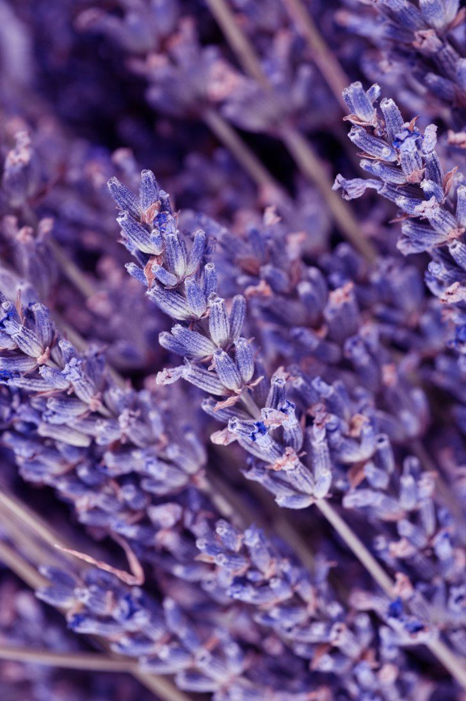
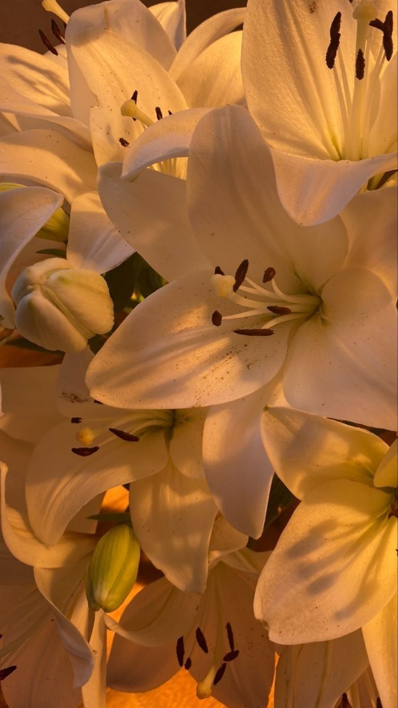
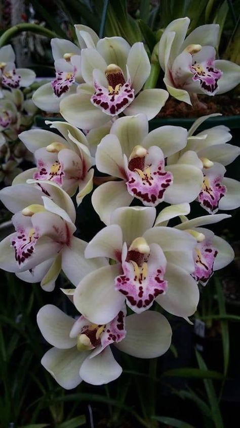
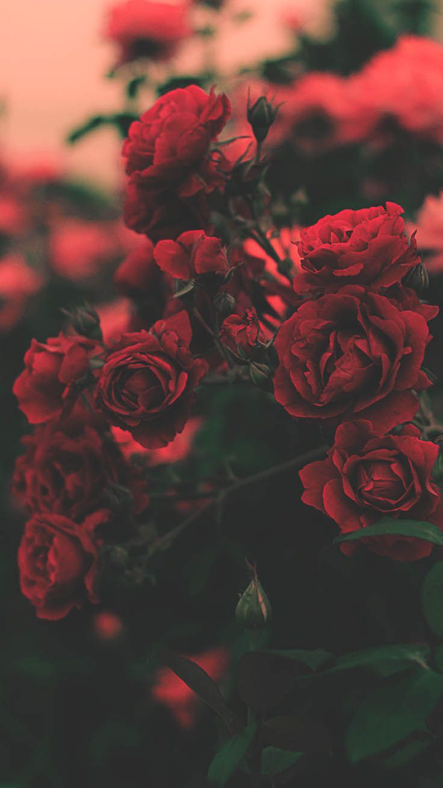

Significado das Flores
| O girassol é uma planta associada à felicidade, energia, alegria e vitalidade, simbolizando respeito e honestidade no amor e lealdade nas amizades. Em algumas culturas, representa coragem e é considerado um bom augúrio para novos empreendimentos. No feng shui, atrai energias positivas, saúde e prosperidade. Na mitologia grega, a flor está ligada à ninfa Clície, que, após ser rejeitada por Hélio, o Deus do Sol, transformou-se em girassol para continuar observando-o. |
Mais sobre Girassóis
|  | A lavanda é uma planta rica em simbolismo, associada a amor e devoção, pureza e limpeza, e proteção e segurança. Sua fragrância suave a torna um símbolo de amor e ambiente romântico, como era comum na Era Vitoriana. Na Roma Antiga, era usada em banhos para purificar o corpo e a mente, um simbolismo que persiste em produtos de higiene. Além disso, na Idade Média, a lavanda era colocada em lareiras para afastar maus espíritos e, em algumas culturas, acredita-se que ela proporciona segurança e paz ao lar. |
Mais sobre Lavandas
|  | O lírio é associado à beleza, elegância e fragrância, além de simbolizar pureza, inocência e virtude. Frequentemente usado em cerimônias religiosas e casamentos, ele também representa renovação e ressurreição, como na tradição cristã, onde simboliza a ressurreição de Cristo. Em outras culturas, está ligado à fertilidade, à maternidade e à transcendência espiritual. |
Mais sobre Lírios
 |
A margarida simboliza pureza, inocência, beleza, simplicidade e juventude. Suas diferentes cores transmitem emoções variadas, a amarela traz consigo alegria, energia e vitalidade; a azul transmite calma, tranquilidade e serenidade; a rosa expressa o amor, romance e feminilidade; já a branca, a mais famosa, retrata a pureza, inocência e amor verdadeiro. |
Mais sobre Margaridas
|  | As orquídeas têm significados diferentes conforme a cor das pétalas, a rosa tem relação com a sensualidade, a vermelha com amor e paixão, a amarela com amizade, a roxa com respeito, admiração, espiritualidade e luxo, a laranja com orgulho, entusiasmo e ousadia, a azul com paz e harmonia, a branca pureza, inocência, elegância e reverência e a verde com esperança. |
Mais sobre Orquídeas
|  | A rosa é uma alegoria do amor, simbolizando tanto a fragilidade quanto a perfeição impossível, e representa a personificação do ser amado. Ela expressa todas as nuances do sentimento amoroso e sua linguagem varia conforme a cor e o número de talos no buquê. |
Mais sobre Rosas